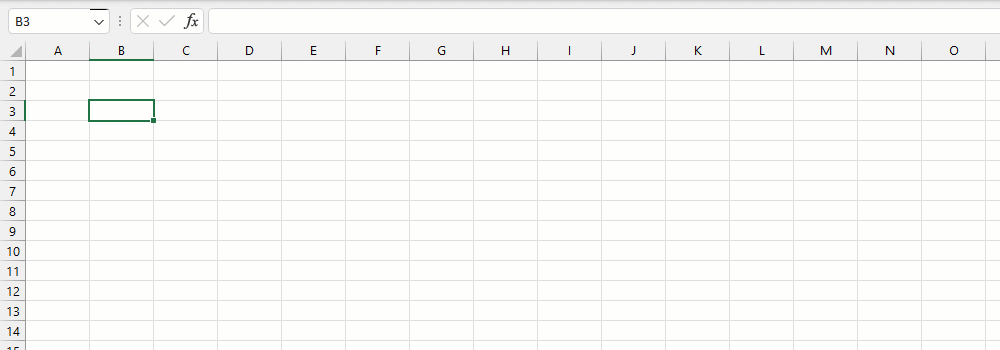
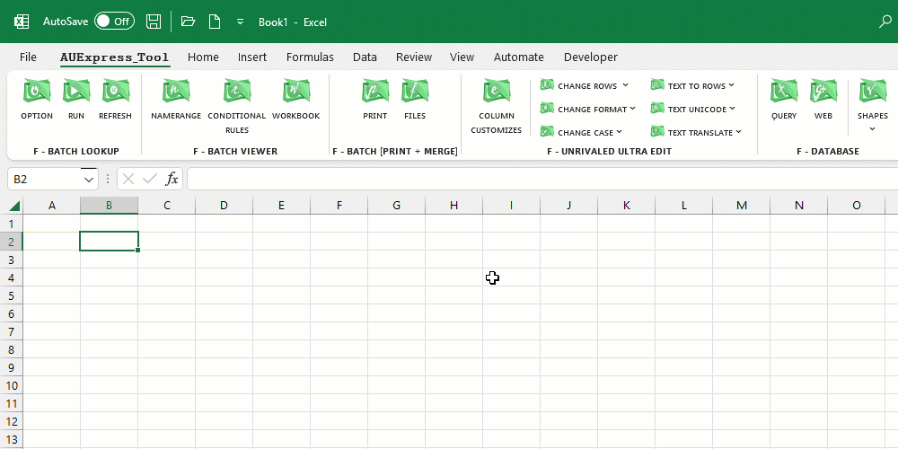
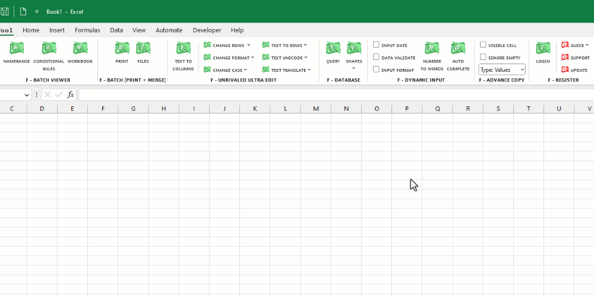
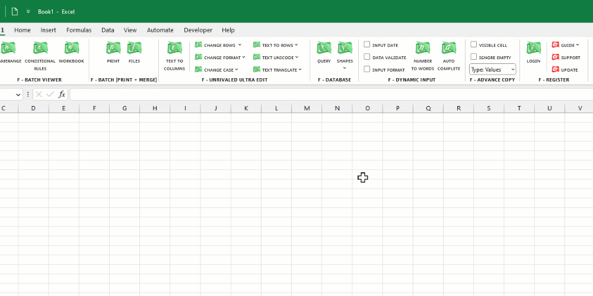
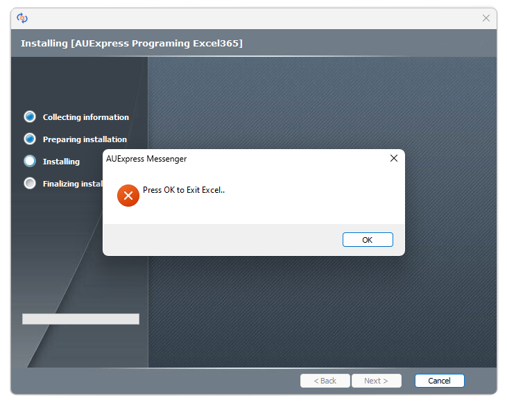
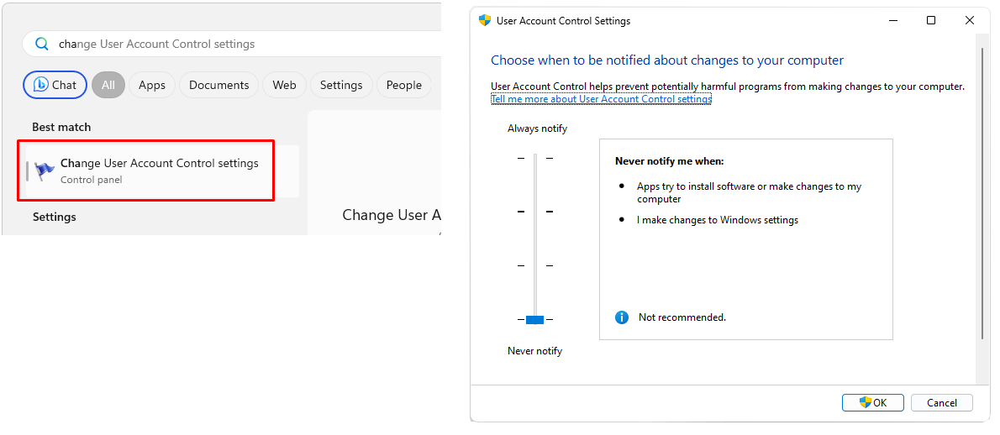
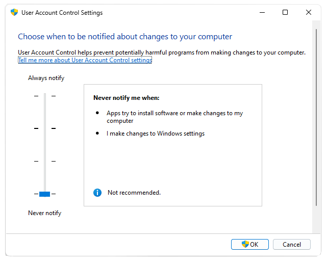
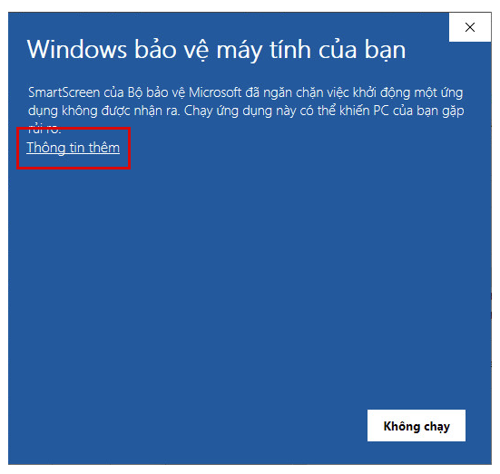
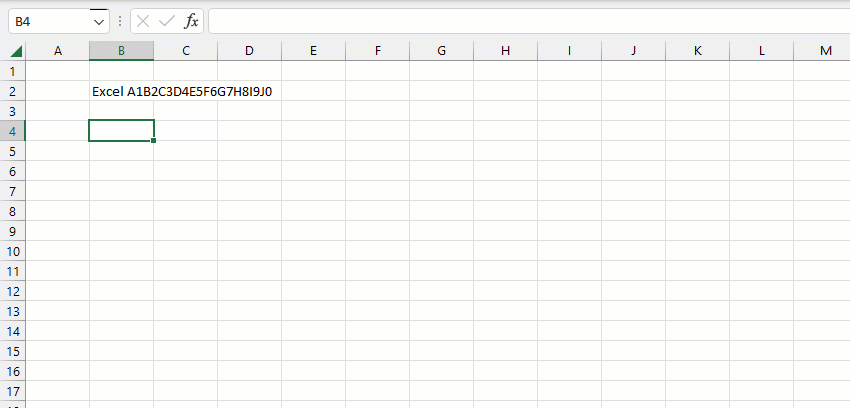

Cách đơn giản nhất để phân biệt phiên bản Excel365, bạn sẽ có hàm LAMBDA.
Kiểm tra các hàm mới sau khi cài đặt thành công Bộ công cụ.
Đầu tiên, bạn cần cài đặt file Database_Tools.exe (cần thiết cho ứng dụng chính).
Tiếp theo, download bộ cài Add-in và chạy run Admin như gif minh họa phía dưới:

Với phiên bản Trial, bạn có thể sử dụng trực tiếp mà không cần đăng nhập.
Giới hạn tính năng: 15 ngày sử dụng và kích thước hàm mảng trả về tối đa 250 dòng.
Với phiên bản Premium, sau khi cài đặt mở #Excel để đăng nhập tài khoản:
Để sử dụng Add-in, vui lòng xem tài liệu PDF, tài liệu Web, hướng dẫn từ video hoặc gif.
#Add-in được cập nhật tính năng mới cũng như fix lỗi liên tục hàng tuần, click vào nút Update để cài đặt.
1. Trước khi cài đặt, bạn cần tắt Excel. Sau khi cài xong, Excel có thêm 2 Tabs mới và bạn có thể sử dụng Tools.
Nếu không tắt Excel sẽ xuất hiện cảnh báo yêu cầu tắt! Click OK chương trình sẽ tự đóng Excel và cài đặt.
 2. Nếu bạn gặp cảnh báo quyền chạy run Admintrastor bạn có thể tắt cảnh báo này bằng cách vào mục:
[Change User Account Control settings] và hạ cấp độ cảnh báo về 0.
3. Nếu xuất hiện cảnh báo Virus khi nhấp OK, click vào mục [Thông Tin Thêm], chọn [Continue] và tiếp tục [Click OK] cho đến kết thúc [Finish].
Nếu không muốn xuất hiện những cảnh báo này về sau, bạn có thể Tìm kiếm Google với Từ Khóa:
[Cách sửa lỗi "This app has been blocked for your protection"] và làm theo hướng dẫn.
AUExpress Tool là Add-in chuyên sâu với đầy đủ (600+) chức năng mở rộng và nâng cao trong thời gian dùng thử (2 tuần).
AUExpress Tool khá đồ sộ, không dễ dàng để thành thạo trong thời gian ngắn.
Với tính năng nâng cao bạn sẽ có thể xử lý các tác vụ khó khăn một cách đơn giản đáng kinh ngạc.
Sau khoảng thời gian dùng thử, nếu không ưng ý bạn được hoàn lại tiền 100%.
Nếu bạn tiếp tục sử dụng Add-in, bạn nên mua khóa cấp phép chính thức (Premium) và tiến hành đăng nhập như đã giới thiệu.
Tất cả các phiên bản đều được cập nhật tính năng miễn phí cho người dùng đã đăng ký.
Tài khoản(1 máy): 1.0M (1 năm) hoặc 5.0M (vĩnh viễn).
Chuyển khoản thông qua QR Code hoặc VPBank: [248.168.323]
Sau chuyển khoản, chụp màn hình và liên hệ Zalo/Gmail hoặc Fanpage để lấy tài khoản.
Hỗ trợ: autechniques@gmail.com | Zalo: 0886.083.080
1, Phân biệt các hàm của Add-in với các ứng dụng khác bằng chữ ký: AU (ví dụ: GROUP.\AU)
2, Các hàm của Add-in hầu hết mở rộng chức năng từ các hàm Excel, vì vậy chúng trừu tượng hơn và khó hiểu với người bắt đầu. (đặc biệt các hàm thao tác mảng)
Vì vậy đừng choáng ngợp và bị động mà nên tiến lên từng bước thực hành - bởi thành thạo một hàm bạn sẽ làm chủ hàng trăm hàm còn lại.
3, VD: để xóa tất cả các số [0,1,..9] trên một chuỗi, thuần Excel bạn sẽ cần dùng tới 10 lần hàm SUBSTITUTE hoặc sử dụng TEXTJOIN để ghép ký tự khá phức tạp.
Tuy nhiên với Add-in, bạn có thể sử dụng hàm SUBSTITUTE mở rộng hoặc hàm REGEXREPLACE, công thức rất ngắn gọn:
Chúng tôi ở đây để thúc đẩy kỹ năng cũng như kiến thức của bạn trở nên vượt trội với #Excel.
Khi bạn ở đó, bạn có thể chia sẽ kiến thức và tiếp tục hướng dẫn cho những người mới hơn.
Hi vọng cộng đồng có thể tăng thêm nhiều giá trị hơn nữa cho chương trình này trong tương lai. Nhưng chúng tôi cũng cần sự trợ giúp của bạn để tiếp cận
nhiều thành viên cũng như các nhà phát triển khác.
Chúng tôi sẽ đánh giá cao bất kỳ sự giúp đỡ nào trong việc truyền bá thông điệp qua nền tảng xã hội: twitter, facebook, linkedIn, tiktok,.. hoặc email, blog.
Cuối cùng, chúc mừng bạn đã sở hữu một trong những Add-ins #Excel mạnh nhất thế giới hiện nay.
💛 Best wishes 💛


✨ Related function
GROUPBY Phân nhóm bảng dữ liệu dựa trên một mảng dữ liệu chỉ định, hỗ trợ tính toán tùy chỉnh.
VLOOKUPS Tìm kiếm nhiều điều kiện trên nhiều cột, trả về tất cả giá trị.
EXCEPT Trả về danh sách phần tử mảng thứ nhất không thuộc mảng thứ hai.
Return to Home